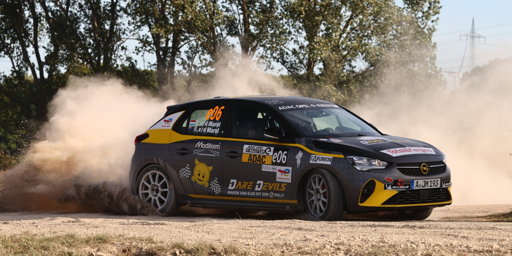

Opel este o fabrica producătoare de vehicule din Germania cu sediul in Russelsheim, fondată în anul 1862 de către Adam Opel. Aceasta este o filială a Groupe PSA din 1 august 2017. În martie 2017, Groupe PSA a fost de acord să achiziționeze Opel de la General Motors. Achiziția a fost aprobată de autoritățile de reglementare ale Comisiei Europene în iulie 2017. Sediul Opel se află în Rüsselsheim am Main, Hesse, Germania.
Inițial compania producea mașini de cusut, iar din 1886 a început să producă biciclete. Adam Opel a murit in anul 1895, urmând ca afacerea să fie preluată de soția acestuia și de doi dintre fii săi. În anul 1898, au realizat un parteneriat cu Frederich Lutzmann, ce a dus la realizarea primului model Opel. Începând cu anul 1899 compania a început să producă automobile. În anul 1929 pachetul majoritar de acțiuni a fost cumpărat de compania americană General Motors. În prezent brand-ul Opel este deținut de Stellantis.
De-a lungul anilor, Opel a produs o gamă largă de mașini, de la mașini compacte la mașini sportive și vehicule comerciale. Unele dintre cele mai populare modele produse de Opel includ Kadett, Astra și Insignia. Opel a fost de asemenea implicat în motorsport și a câștigat numeroase premii și distincții în diferite evenimente de curse.
În ultimii ani, Opel s-a concentrat pe producerea de mașini prietenoase cu mediul înconjurător, cu tehnologie avansată. În 2011, Opel a lansat Ampera, prima mașină germană cu un sistem de propulsie electrică integrat complet și produs în masă. Ampera era cunoscută pentru raza sa lungă și timpul rapid de încărcare și a fost un pas important în dezvoltarea mașinilor electrice.
Opel lucrează și la dezvoltarea tehnologiei de conducere autonomă și s-a asociat cu alte companii din industria auto pentru a aduce această tehnologie pe piață. În plus față de concentrarea pe inovație, Opel este, de asemenea, angajat în producerea de mașini sigure, fiabile și accesibile pentru consumatori.
Astăzi, Opel face parte din grupul mai mare Stellantis, care include mărci precum Peugeot, Citroen și Chrysler. Cu toate acestea, Opel continuă să producă mașini care sunt distinct germane în design și inginerie și rămâne o alegere populară printre cumpărătorii de mașini din Europa și din întreaga lume.
Opel a fost primul producător de automobile german care a produs o mașină cu un sistem de propulsie electric complet integrat, produs în serie. Mașina, numită Ampera, a fost lansată în 2011. Echipata cu un pachet de baterii litiu-ion de 16 kWh alimentează o unitate de propulsie electrică avansată de 111 kW/150 CP pentru a furniza între 40 și 80 km de funcționare pur electrică cu zero emisii – în funcție de teren, tehnica de conducere și temperatură – atunci când este complet încărcată. Conform reglementărilor de măsurare a consumului de combustibil și a emisiilor de CO2 la acea vreme, Ampera consuma 1,2 l/100 km și a emis 27 g/km CO2 combinat în ciclul NEDC.
Opel are o istorie lungă de implicare în motorsporturi și a câștigat numeroase premii și distincții în diferite evenimente de curse. Compania a concurat în competiții precum Campionatul European de Mașini de Turism (ETCC) și Campionatul Mondial de Raliuri (WRC).
Opel și-a făcut debutul în ETCC la sfârșitul anilor '60 și a câștigat titlul de campion în 1974 cu modelul Opel Commodore. Compania a continuat să concureze în ETCC pe tot parcursul anilor '70 și '80 și a câștigat mai multe titluri de campion cu modelele Opel Ascona și Opel Manta.
În plus față de succesul său în motorsporturile de mașini de turism, Opel a concurat și în WRC. Opel și-a făcut debutul în WRC la sfârșitul anilor '70 și a câștigat mai multe evenimente de raliuri în anii '80 și '90. Unul dintre cele mai de succes mașini de raliu ale Opel a fost Opel Corsa, care a câștigat Cupa Mondială FIA de Raliuri 2-Litri în 1994 și 1995. Opel a avut, de asemenea, succes în era Grupului B din WRC cu modelul Opel Manta 400, care a câștigat Raliul Sanremo în 1983.
Opel a fost implicat și în alte evenimente de motorsporturi de-a lungul anilor, cum ar fi Deutsche Tourenwagen Meisterschaft (DTM) și Campionatul German de Raliuri. În DTM, Opel a câștigat mai multe titluri de campion în anii '90 cu modelele Opel Calibra și Opel Astra. În Campionatul German de Raliuri, Opel a câștigat mai multe titluri în anii '70 și '80 cu modelele Opel Kadett și Opel Ascona.
În ansamblu, succesul Opel în motorsporturi a ajutat la consolidarea brandului ca lider în inginerie și performanță auto. Participarea companiei la evenimente de curse i-a permis să dezvolte tehnologie și tehnici avansate care au fost utilizate în producția mașinilor sale de serie. Astăzi, Opel continuă să fie implicat în motorsporturi prin parteneriate cu echipe și evenimente de curse și rămâne o alegere populară printre entuziaștii de curse și cumpărătorii de mașini din întreaga lume.